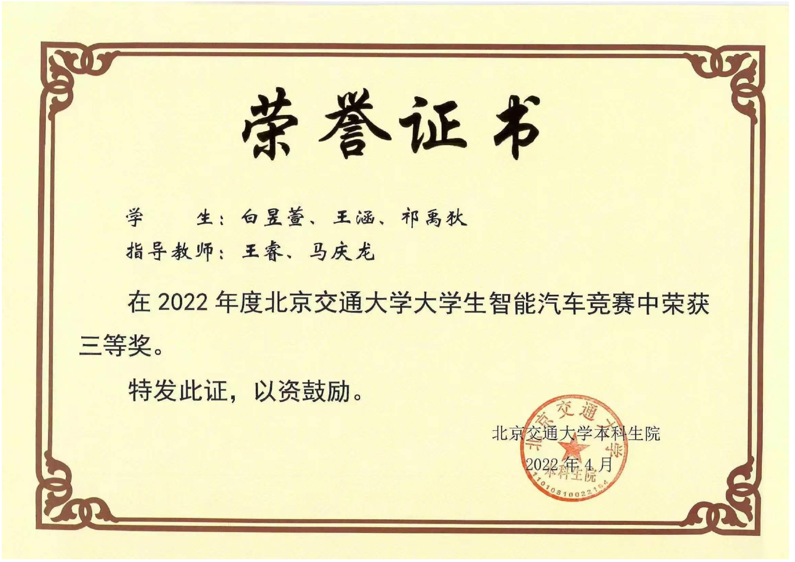
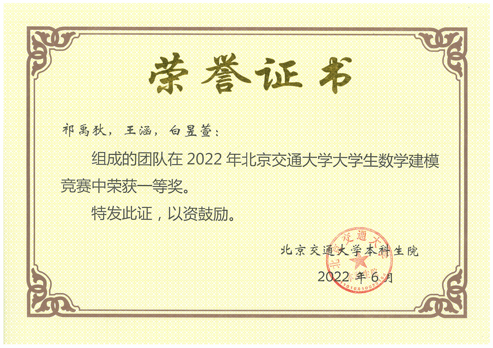
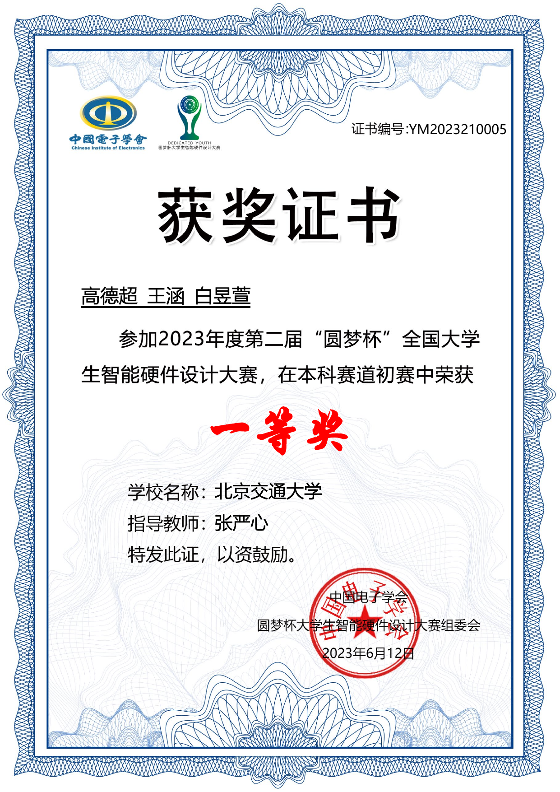
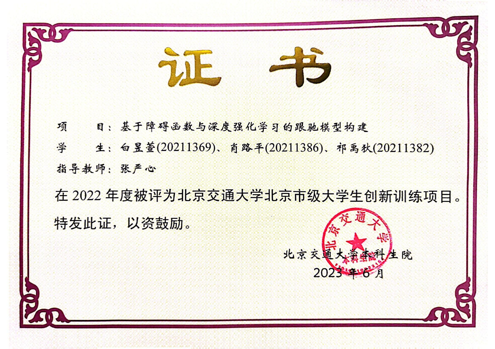
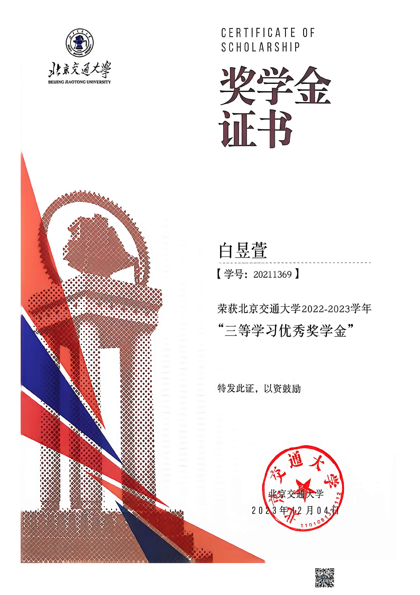
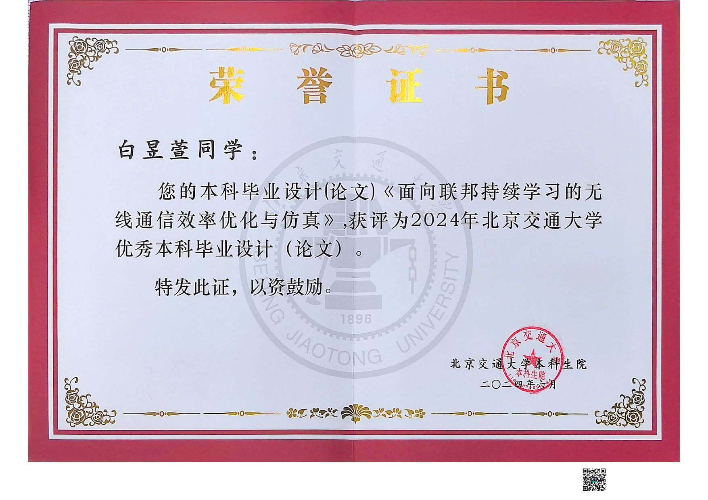
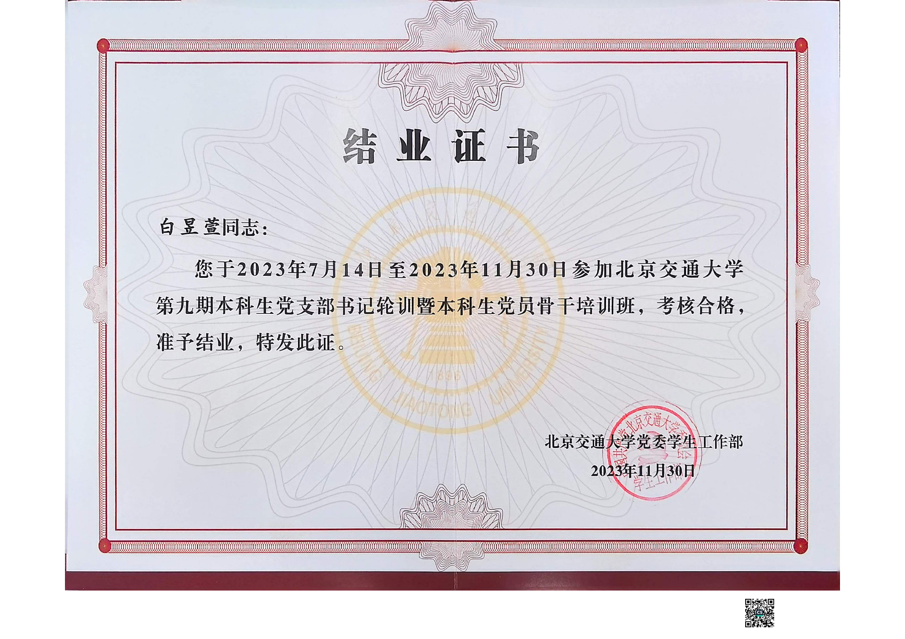
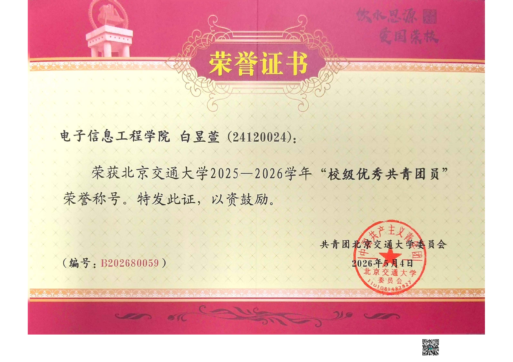

Awards
奖项与证明
每一项荣誉，既是对阶段性努力的肯定，也记录着我在学习、科研、竞赛和项目实践中的成长。从本科阶段的创新实践，到研究生阶段的科研探索，我不断尝试新的方向，并在一次次准备、修改与协作中积累经验。









荣誉记录结果，经历塑造成长。
相比奖项本身，我更珍视准备过程中形成的思考方式、协作能力和持续完善问题的耐心。每一次经历都让我更加明确自己的方向，也让我有信心面对下一项新的挑战。